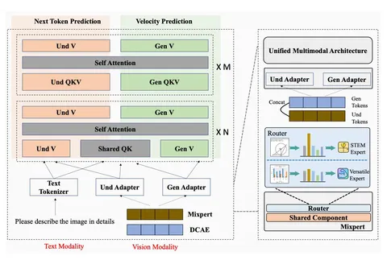

Сегодня разбираем статью Huawei под названием EMMA. Это мультимодальная модель, которая одной архитектурой пытается решать задачи понимания изображений, генерации и редактирования. То есть объединяет image-to-text, text-to-image и image-to-image.
На вход подаются тексты и изображения. Картинки проходят через два энкодера.
Первый — это DCAE (Deep Compression Autoencoder). Он используется в генеративной ветке и сильно сжимает изображение.
Второй — SigLIP2 (конкретно SigLIP2-so400m), используется для семантического высокоуровневого представления изображений.
Важно, что оба энкодера дают одинаковый уровень сжатия х32. За счёт этого они могут объединять признаки не по токенам, а по каналам, не увеличивая длину последовательности.
После SigLIP2 применяют pixel shuffle, чтобы дополнительно уменьшить число токенов, а после DCAE — адаптер (MLP), чтобы привести размерности.
Для задачи понимания добавляют интересный механизм — mixture-of-experts в энкодере. Есть два эксперта: универсальный (versatile) и специализированный под STEM-задачи (графики, математика и прочее). Отдельный роутер решает, какому эксперту отправлять изображение. Если это STEM-домены – идём к специализированному, остальное — к универсальному.
Причём STEM-эксперт инициализируется из обычного и дообучается только на финальной стадии и только на соответствующих данных.
Архитектура включает две ветки:
- Und (understanding) – для понимания,
- Gen (generation) – для генерации.
На ранних слоях параметры QK-матриц шарятся, а потом ветки становятся полностью независимыми.
При этом взаимодействие между ветками происходит через глобальный self-attention.
Модель инициализируется из Qwen3-4B.
По лоссам всё стандартно: для понимания используют next-token prediction, для генерации — flow matching с velocity prediction.
В качестве данных используют смесь трёх типов:
- I2T (image-to-text) — для анализа изображений,
- T2I (text-to-image) — для генерации,
- IT2I (image editing) — для редактирования.
Глобально данные — комбинация открытых датасетов, внутренних данных и синтетики. Последняя активно используется для генерации и редактирования. Датасет GPT-Image-Edit-1.5M авторы исключили, сославшись на то, что он ухудшает subject consistency.
Обучение состоит из шести стадий:
1. Alignment — обучается только адаптер анализа изображений (Und), энкодеры заморожены.
2. Pre-training — обучаются всё, кроме DCAE.
3. Supervised fine-tuning — добавляются более качественные данные, плюс подключается editing.
4. Quality tuning (QT) — дообучение на отфильтрованных данных высокого качества.
5. STEM expert tuning (ET) — обучается только STEM-эксперт.
6. Router tuning (RT) — отдельно дообучается роутер.
На задачах стандартных VLM-бенчмарков модель примерно на уровне Qwen3-VL. Есть просадка на MMMU и рост на MathVista, вероятно, за счёт STEM-эксперта. НаGenEval модель демонстрирует более высокий prompt following, чем у Qwen-Image.
Пара интересных наблюдений.
- Модель умеет работать с китайскими инструкциями в генерации и редактировании, даже без T2I-данных на китайском — вероятно, это эффект knowledge transfer из I2T-данных.
- Хотя editing обучался на одношаговых инструкциях, модель обобщается на многошаговые инструкции (типа «замени очки, поменяй одежду, измени фон»).
В целом довольно аккуратная попытка собрать unified multimodal-модель.
Разбор подготовил
CV Time
